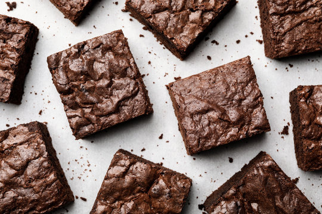

Brownies Recipe

Description
These are the most gooey, fudgy, rich, moist brownies I've ever had. Best part is: they are very easy to make
Ingredients
- 1 cup (227g) butter, to be browned
- 1 cup (90g) Dutch-process cocoa powder
- 4oz (113g) dark or semisweet (60% cacao) chocolate, finely chopped
- 1 tsp instant espresso (or 1 Tbsp instant coffee)
- 1.5 cups (300g) white sugar
- 0.5 cups (100g) brown sugar
- 1 Tbsp vanilla
- 4 eggs
- 1 cup (120g) flour
- 1 tsp course kosher salt
Steps
- Preheat oven to 350°. Line 9x13" pan with foil or parchment paper with overhangs for easy removal.
- Put cocoa powder, chopped chocolate, and espresso powder in a heat-proof bowl.
- Make brown butter: Melt butter in a light-colored saucepan over medium-low heat. Once foaming and spitting, stir and scrape bottom with a spatula every 10-15 seconds. Grainy white milk solids will begin to appear on the bottom. Continue for 5-10 minutes (go by senses, not time). When foam clears and spitting noises go silent, watch closely: The milk solids will toast in seconds. As soon as the solids turn brown and smell nutty, remove pan from heat so it doesn't burn.
- Immediately pour hot brown butter into prepared bowl, to bloom cocoa and melt chocolate. Stir until smooth. Set aside to cool.
- With a stand or hand mixer, whip sugars, vanilla, and eggs on medium-high until thick, smooth, fluffy, and lightened in color. For very moist, rich brownies, stop after 4-5 minutes. For slightly more height and fluff, whip 8-10 minutes until very thick and pale. (I did the lower end of the spectrum, 4-5 minutes - I'd recommend starting there).
- Reduce speed to low. Slowly pour chocolate-butter mixture into egg foam mixture until incorporated.
- Using a spatula, fold in flour and salt until just incorporated. Fold in additional chocolate if using. Batter will be very thick.
- Scoop and spread batter evenly into prepared pan.
- Bake 25 minutes until surface is glossy and just set (not jiggly in center). Do not overbake. They will finish cooking as they cool.
- Let cool at least 30 minutes before removing from pan to slice.